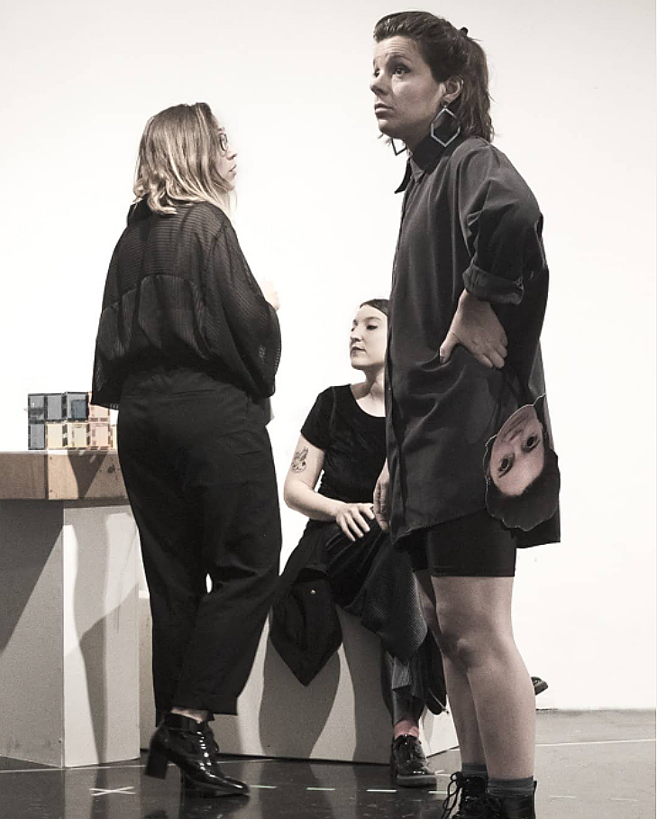

Los museos tienen menos que ver con el pasado que con el futuro: la conversación es menos sobre preservar
el pasado que sobre crear el futuro del espacio público, el futuro del arte y el futuro como tal.
Hito Steyerl – ARTE DUTY FREE El arte en la era de la guerra civil planetaria
Esto hay que exponerlo x----------------[
]----------------x Ellas exponen
Ellas expuestas x----------------[
Hay gestos que son de todas
[ ] [ ] [ ] [ ]
- ¿Dónde está lo contemporáneo? Lo contemporáneo está en todas partes.
- dice el texto teatral
“Museo”,
escrito por la compañía de teatro argentina, Piel de Lava. En sus procesos de creación confluyen habitualmente
la dramaturgia grupal, la actuación y la dirección teatral.
“Museo-1er movimiento” fue concebida como reescritura a partir de ese material por el colectivo
Hiedra
compuesto en ese momento por las actrices Alejandra Artigalás, Florencia Dansilio, Karen Halty y Camila
Sanson. Primero, esta versión se pensó como una lectura radiofónica y después, como una
investigación/ejercicio escénico site-specific dentro del Centro de Exposiciones Subte. Efectivamente, la
pieza fue montada y abierta al público en cuatro funciones a fines de noviembre del pasado año, mientras el
propio espacio de arte estaba en arreglos para recibir la 50ª edición del premio Montevideo de Artes Visuales.
Escaleras, tarros de pintura, andamios y herramientas. Elementos que no son obras de arte y que tampoco son
escenografía...Esa especie de inter-espacio visual, ese territorio en transición, recibió lo escénico durante
las noches. - ¿Quién construye el espacio?
¿Cuál es el espacio de obra?
¿Cuáles son los
bordes?
-
intercambiamos juntas antes de que escribiera estas impresiones.
°=°=°=°=°=°=°=°=
Inaugura el museo “El almuerzo del obrero”
~~~~~~~~El fiambre es la historia de este Museo~~~~~~~~El fiambre es la historia de
cualquier edificio de esta ciudad~~~~~~~~
°=°=°=°=°=°=°=°=
Hablamos de la construcción material pero sobre todo de la construcción simbólica. Y de esa convivencia
concreta -casi metanarrativa- con las personas que trabajan haciendo (con sus manos) el museo, mientras que
los personajes actúan sobre eso. Las cuatro actrices, que encarnan a cuatro mujeres del arte contemporáneo,
desarrollaron esta pieza en una grieta entre lo que ya sucedió (rastros de muestras, vernissages, desfiles de
artistas y posibles convocatorias a becas) y lo que no sucederá todavía (la propia matriz conceptual de su
futuro museo y su obra expuesta). Todo esto, transcurre paralelamente en la ficción y en la realidad de su
puesta en escena. Hay leves dislocaciones o extrañamientos, como si escucháramos una conversación íntima en un
espacio privado que es público. Algo así.
====Siento que se pierde lo del cuerpo====
Natura++leza
No me gustan los animales muertos y exhibidos
<*?<*?<*?<*?<*?<*?<*?<*?<*?<*?<*?<*?<*?<*?<*?<*?
Muchas veces, al menos en apariencia, los discursos contemporáneos derrochan transdisciplinariedad pero: ¿cuán
cerca están el museo y el teatro? ¿se reconocen? ¿qué se dicen? ¿construyen juntxs? ¿comparten públicxs? En
escena, casi como único objeto, hay una maqueta que representa al museo en pequeña escala. Esa arquitectura
mínima “del museo dentro del museo” adquiere diversas capas de sentido. Por un lado, emula, hace alarde de la
etimología de la palabra. Del latín: museum, lugar dedicado a las Musas o casa de las Musas. Podríamos decir
que en ella se condensa entonces la potencia ritual e invocadora del teatro. Es el objeto de deseo y también
es la proyección a futuro, es para lo que seguimos haciendo. Por otro, es una fuerza liminal, como una
construcción fronteriza. Como un boceto que habla de los lenguajes que se cruzan sin certezas, quebradizos,
frágiles.
¿Puede ser que en el pl/\no hay/\ mezcl/\d/\s líne/\s re/\les y líne/\s represent/\tiv/\s?
¿Cu/\l ser/\ l/\ líne/\ que sep/\r/\ el museo del shopping?
////¿Dónde estar/\ el límite?\\\\
“Museo-1er movimiento” nos acerca a otros modos de hacer-pensar-sentir, desde las artes vivas. Se
plantea a sí
misma, no como una obra de recorrido, sino como plataforma para accionar pensamiento desde el epicentro mismo
que cuestiona. No ilustra el espacio del Subte Municipal ni lo aborda como lugar “no convencional” donde hacer
teatro. Lo exhibe en su máxima fisicalidad, lo interpela en su máxima desnudez. Mientras sus cuerpos juegan,
intercambian roles, se conmueven y discuten, los personajes se van cuestionando las relaciones dentro del
sistema del arte. Y las relaciones entre las personas que formamos parte del arte. En ese cuadrilátero de
mármol marcado con cinta papel de colores, como una partitura en movimiento, todo tiembla colectivamente
preguntándonos qué lugar decidimos ocupar desde la creación. Y esto mismo rebota hacia nosotrxs: el lugar de
los diferentes públicxs y sus cercanías o proximidades.
En el capítulo, Si no tienes pan, ¡come arte! El arte contemporáneo y los fascismos derivados
del libro
Arte
Duty Free, la videoartista y filósofa Hito Steyerl, propone una serie de preguntas sobre
el rol del arte
contemporáneo:
Pregúntense a sí mismos:
¿deseo un capitalismo global con un rostro fascista?
¿deseo blanquear a tráves del arte un clima insano, los líderes insanos, la crecida de las aguas
tóxicas, una infraestructura que se desmorona y los nuevos muros?
¿cómo puede evolucionar la autonomía artística (o relacionada con el arte) de la soberanía arrogante a
la modesta devolución en red?
¿cómo pueden contribuir las plataformas cooperativas?
¿pueden las instituciones artísticas seguir el liderazgo de las nuevas redes y alianzas municipales de
las “ciudades rebeldes”?
¿se puede transformar el arte como moneda en arte como confluencia? ¿reemplazar la especulación por el
desborde?
Pausa. Se vacía el espacio. Se apagan las
luces.
.

A la izquierda de la foto Alejandra Artigalás, sentada Karen Halty y de pie en primer plano con la máscara, Camila Sansón.
Claudia Campos
Es escritora, actriz y artista visual.
Sus libros “La carne es Devil” (Yaugurú,2013) y “Jardín interior” (La propia Cartonera en Uruguay,2017 y
Ediciones Lilliputienses en España,2019) formaron parte de diversos ciclos de lectura, publicaciones y
festivales de literatura así como de ferias locales e internacionales (Mundial Poético, FILBA, Gusto Tuyo,
Letra Ñ, Feria del libro de Montevideo y Feria del libro de BsAs entre otros).
Integró diferentes colectivos artísticos transdisciplinares con los que realizó intervenciones, performances
y puestas en escena en espacios no convencionales (El negro va con todo, Lo peor de nosotros mismos, Diez de
cada diez, Potocas y Mujeres que cantan).
Fue co-fundadora y gestora de “Residencias Silvestres” núcleo de creación para escritores y artistas
visuales. Como curadora, ha acompañado el proceso y montaje de la muestras de arte contemporáneo “
Desmantelamiento” (Espacio de arte Pera de Goma,2016) y “Casos en el Micon's”(Bar Micon's, 2017).
Ha sido seleccionada en residencias artísticas con proyectos híbridos entre experiencias visuales y
escritura (Fortuito - Casarodante, 2017, Una mujer está bordando - Museo Zorrilla de San Martín, 2019 y Hay
un insecto en el jardín - Espacio de Arte Contemporáneo, 2019).
En 2021 recibió una beca de investigación de IDENSITAT-Consorcio de Museos para residir 3 meses en Valencia
y desarrollar el proyecto multidisciplinario: Turia el loco. Éste, se presentó en el Centro de Cultura
Contemporánea en el marco de “Cauces de Ficción” con una exposición y distintas activaciones abiertas al
público.